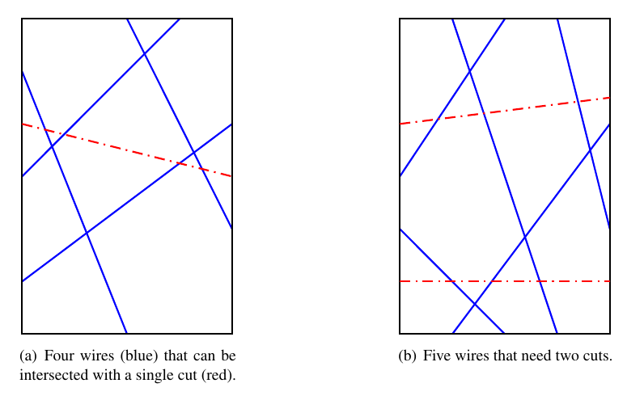
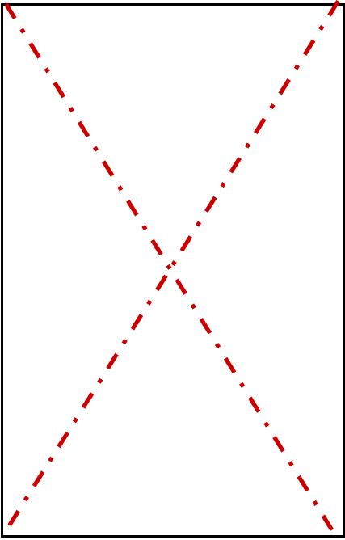
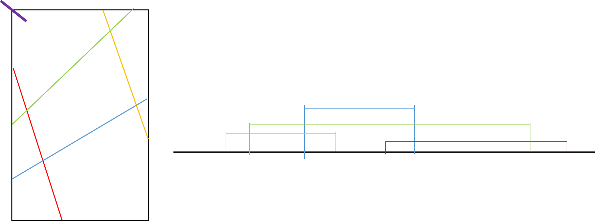

2018 ACM-ICPC World Finals H
IN zh-CH
题意
有一个 w×h 的框（ 1≤w,h≤108 ） ，有 n 条线段，每条线段两端点在框的不同边上，问每次砍直线，至少砍几刀把所有线砍断，并输出任意一种解。保证没有电线连接到门的四个角落。输入的所有位置都是两两不同的。

（蓝色为线，红色为刀切的直线） 左图一刀可切所有线，右图需两刀。
题解
首先，稍微观察一下就会发现：最多切两刀，如下图这样对角线的切法一定能断掉所有线（任意一条黑边到其他黑边的路都被断了）

那么我们只要判断能否用一刀切断所有线。
然后需要一点脑洞:

如图将一个框从左上角切开，再将其拉值，然后便得到了一些区间，考虑这和原图有怎样的对应关系：原图中直线 a 直线 b 有交点，等价于 右图中 a 区间包含 b 的一个端点。
那就好办了，先把原图“展开”，每条线对应到一个区间，我们切的一刀也是一条直线，那问题转化为找到一个区间 包含原本 n 个区间各自的一个端点。
这东西可以排序后用双指针解决。右指针+1，while(包含了同一区间的两端点):左指针++。若 r-l+1==n 就找到解了。
需要注意的是，输出的直线不能贴着框，故让 l,r 实际对应的位置相距最远一定是可行的。详见代码
CODE
1
2
3
4
5
6
7
8
9
10
11
12
13
14
15
16
17
18
19
20
21
22
23
24
25
26
27
28
29
30
31
32
33
34
35
36
37
38
39
40
41
42
43
44
45
46
47
48
49
50
51
52
53
54
55
56
57
58
59
60
61
62
63
64
65
66
67
68
69
70
71
72
73
74
| #include <bits/stdc++.h>
#define mp make_pair
#define fi first
#define se second
using namespace std;
typedef pair<double,double> pdd;
typedef double db;
const int N = 1000010;
int n,w,h;
struct pp{
int ps,id,k;
bool operator<(const pp a)const {
return ps<a.ps;
}
}p[N<<1];
db id(db x,db y) {
if(y==0) return x;
if(x==w) return y+w;
if(y==h) return -x+w+w+h;
if(x==0) return -y+w+w+h+h;
return NAN;
}
pdd getpos(db id) {
if(id<w) return mp(id,0);
id-=w;
if(id<h) return mp(w,id);
id-=h;
if(id<w) return mp(w-id,h);
id-=w;
return mp(0,h-id);
}
template<typename T>
inline void red(T &x) {
x=0;bool fg=0;char ch=getchar();
while(ch<'0'||ch>'9') {if(ch=='-') fg^=1;ch=getchar();}
while(ch>='0'&&ch<='9') x=(x<<1)+(x<<3)+(T)(ch^48),ch=getchar();
if(fg) x=-x;
}
bool vs[N];
int main() {
cin>>n>>w>>h;
for(int i=1;i<=n;i++) {
int x1,x2,y1,y2;
red(x1);red(y1);red(x2);red(y2);
int d1=id(x1,y1),d2=id(x2,y2);
if(d1>d2) swap(d1,d2);
p[i*2]={d1,i,1};
p[i*2-1]={d2,i,-1};
}
sort(p+1,p+n+n+1);
p[0].ps=0;
p[n+n+1].ps=h*2+w*2;
int cnt=0;
for(int r=1,l=1;r<=2*n;r++) {
if(vs[p[r].id]) {
while(vs[p[r].id]) {
vs[p[l++].id]=0;
assert(l<=r);
cnt--;
}
}
vs[p[r].id]=1;cnt++;
if(cnt==n) {
pdd t1=getpos(1.0*p[l-1].ps+0.5),t2=getpos(1.0*p[r+1].ps-0.5);
printf("1\n%.2lf %.2lf %.2lf %.2lf\n",t1.fi,t1.se,t2.fi,t2.se);
return 0;
}
}
printf("2\n%.1lf %d %.1lf %d\n%.1lf %d %.1lf %d\n",0.5,0,w-0.5,h,0.5,h,w-0.5,0);
return 0;
}
|